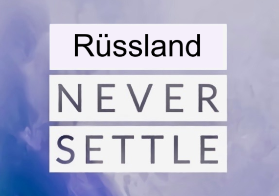

МЕНЮ НАВИГАЦИИ
Ядро
Предустановки
Реестр
Инструкции
Технологии
Репозиторий
Ядро
Функции ядра
Основные определения
Бан-триггеры
ОСНОВНАЯ ЧАСТЬ ЯДРА
Второстепенные принципы
Функции ядра
Параметры
Сведения о системе
Список изменений
Персонализация

LOSHICA OS
Веб-платформа для создания ВСЕГО, что только можно
Версия ядра
4.0
Версия Loshica OS
3.0
Номер сборки
#14
Дата релиза
29.09.2019
#IIPEKOLICT.github.io
IIPEKOLICT, Loshica, RusslandAll rights recerved
Сведения о системе
Параметры
Сведения о системе
Список изменений
Персонализация
LOSHICA UI 3.0 Test Release (#)
Дата выпуска: .10.2019
.10.2019 (#):
сделал пункт "Персонализация"
завел скрипт тем (2 темки)
10.10.2019 (#15):
расширенная оптимизация кода
больше модульности
окончательно допилил разметочные классы и интегрировал все изменения
бутлоадер теперь временно является по сути 1 шторкой
06.10.2019 (#14):
сделал пункт "Сведения о системе"
сделал пункт "Список изменений"
01.10.2019 (#13):
переделал шторку (теперь она двойная, с выезжанием второй из первой)
почистил css
добавил коммы в boot.css и system.css
30.09.2019 (#12):
сделал кнопки в меню кастомизации
добавил заголовок в меню кастомизации
LOSHICA UI 2.1 Test Release (#11)
Дата выпуска: 29.09.2019
полностью переделал шторку и сделал ее в итоге двойной
добавил статусбар
интегрировал все изменения в основной файл
LOSHICA UI 2.0 Test Release (#10)
Дата выпуска: 24.09.2019
24.09.2019 (#10):
реализовал выезжание 2 шторки через css
сделал минималистичный бутлоадер
собрал полностью структуру и интегрировал все изменения в index.html
23.09.2019 (#9):
переделал шторку
допилил мини-шторку снизу
пофиксил наложения на бутлоадер (активные области 2х шторок)
поигрался чуток со скриптами (!!!)
22.09.2019 (#8):
сделал голую структуру сайта
мелкие исправления + начал делать мини-шторку снизу
21.09.2019 (#7):
полностью починил постраничную двойную навигацию
оптимизация кода
допилил и откалибровал анимацию и дизайн табл-меню
20.09.2019 (#6):
+ оптимизация
внедрил вторую постраничную навигацию посредством шторки
19.09.2019 (#5):
переделал и откалибровал шторку (теперь реализована через строки)
масштабная оптимизация кода в system.css
18.09.2019 (#4):
переделал шторку
вырезал статусбар
оптимизация кода
исправления дизайна табл-меню
17.09.2019 (#3):
переход на новый синтаксис
переделал табл-меню
LOSHICA UI 1.1 Test Build (#2)
Дата выпуска: 13.09.2019
LOSHICA UI 1.0 Test Initial Build (#1)
Дата выпуска: 03.09.2019
Список изменений
Параметры
Сведения о системе
Список изменений
Персонализация
Цвет акцента:
Акцент 1
Акцент 2
Акцент 3
Цвет фона:
Черный
Темно-серый
Серый
Темы:
Oxygen
ZenUI
Pixel
Персонализация
МЕНЮ НАВИГАЦИИ
Ядро
Предустановки
Реестр
Инструкции
Технологии
Репозиторий
МЕНЮ КАСТОМИЗАЦИИ